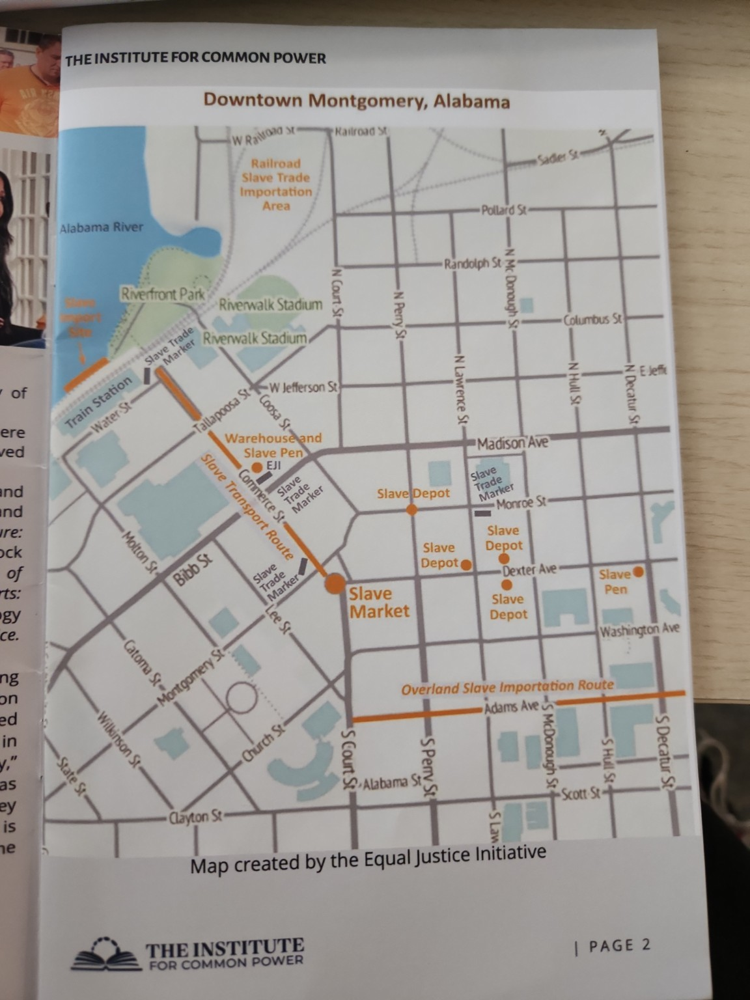

How to explore:
Use WASD or arrow keys to move. Click a station screen to open Street View + placard.
Tip:
Encourage students to rotate, zoom, and read before answering reflection questions.
Back
Next
Close
